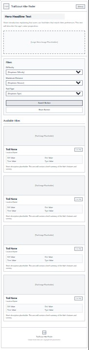
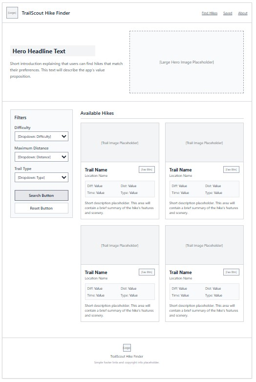

App Name
TrailScout Hike Finder
Purpose and Audience
TrailScout Hike Finder will help users find hiking trails that match their preferred difficulty, distance, and trail type. Users will be able to browse available hikes, view important trail information, and filter the list to find an appropriate hike.
The intended audience includes beginner and experienced hikers who want a quick and simple way to compare local hiking trails. The app will be especially useful for people using a mobile device while planning an outdoor activity.
Content
Each hike will include information such as:
- Trail name
- Trail image
- Location
- Difficulty level
- Distance
- Estimated hiking time
- Trail type
- A short trail description
Dynamic JavaScript Elements
JavaScript will be used to store trail information in an array of objects. Each object will contain information about one hiking trail, including its name, location, difficulty, distance, image, and description.
The app will display the hikes by creating trail cards with JavaScript. Users will be able to select filters for difficulty, maximum distance, and trail type. Event listeners will detect when a filter changes or when the user selects the search button.
The app will use conditional statements to determine which
hikes match the user's selections. The
filter() array method will create a list of
matching hikes, and forEach() will display each
matching hike on the page.
A favorites button may also allow users to save hikes they are interested in. The app will update the page when a favorite is added or removed.
Planned JavaScript Features
- An array containing multiple hike objects
- A function that creates and displays hike cards
- A function that filters the hikes
- A function that displays a no-results message
- DOM selection and modification
- Click and change event listeners
- Conditional statements
filter()andforEach()
Pseudocode
Create an array named hikes
For each hike:
Store the trail name
Store the location
Store the difficulty
Store the distance
Store the estimated time
Store the trail type
Store the image
Store the description
Create a function named displayHikes
Inside displayHikes:
Select the hike results container
Clear the current results
If the hike list is empty:
Display a message that says no hikes were found
Otherwise:
Loop through the hike list
Create a card for each hike
Add the trail information to the card
Add the card to the results container
Create a function named filterHikes
Inside filterHikes:
Read the selected difficulty
Read the selected maximum distance
Read the selected trail type
Filter the hikes array
For each hike:
Check whether the difficulty matches
Check whether the distance is within the selected limit
Check whether the trail type matches
If all selected requirements match:
Include the hike in the filtered results
Send the filtered hikes to displayHikes
When the user clicks the search button:
Run filterHikes
When the user clicks the reset button:
Reset all filter selections
Display every hike
When the page first loads:
Display every hike
Color Scheme
Headers, buttons, and navigation
Section backgrounds and cards
Main page background
Text and borders
Typography
Headings: Arial, Helvetica, sans-serif
Body text: Arial, Helvetica, sans-serif
Mobile Wireframe

Desktop Wireframe
